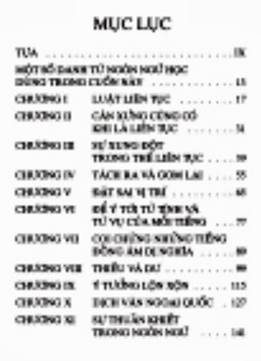

Trong bộ Hồi kí có trang khá nhiều chỗ cụ Nguyễn Hiến Lê nói về cuốn Tôi tập viết tiếng Việt. Ví dụ như đoạn sau đây trong tiết cụ tự nhận xét về cuốn Khảo luận về ngữ pháp Việt Nam (viết chung với Trương Văn Chình):
“Tôi nghĩ môn ngữ pháp có ích đó, nhưng lí thuyết quá, không thiết thực bằng chỉ cách cho thanh niên viết tiếng Việt ra sao cho sáng sủa, và trong mấy năm sau tôi lượm trên các sách báo Sài Gòn những câu tối tăm, viết không xuôi, tìm ra nguyên nhân tại đâu, rồi đề nghị cách sửa, và nếu có thể được thì rút ra một vài qui tắc. Cuốn đó viết xong, nhan đề là Tôi tập viết tiếng Việt nhưng vì chưa xuất bản, nên tôi để lại một chương sau sẽ xét tới”. (Hồi kí Nguyễn Hiến Lê, Nxb Văn học, 1993, trang 451).
Trong tiết Sửa lại bản thảo chưa in, cụ lại cho biết thêm:
“Trong chương XXVII tôi đã nói khi soạn gần xong cuốn Khảo luận về ngữ pháp Việt Nam, tôi thấy công trình đó không có lợi ích thiết thực bằng một cuốn chỉ cách viết tiếng Việt sao cho sáng sủa, xuôi tai, không lai căng.
Có chủ trương đó rồi, ngay từ 1963, hễ đọc sách báo, tôi luôn để cây viết chì bên cạnh, thấy câu nào mắc một trong những lỗi kể trên, tôi đánh dấu liền, sau chép lại, sắp riêng vào một chỗ. Tôi chú trọng nhất vào sự cấu tạo câu văn, và khi đã gom được ba bốn trăm câu rồi[1], tôi lựa lại còn độ trăm câu, tìm xem lỗi tại đâu, sắp đặt thành từng loại, cố kiếm ra những luật chi phối tiếng Việt, mà luật quan trọng nhất theo tôi là luật liên tục, luật cân xứng…
Tôi lại nghĩ ý nào có thể diễn được theo lối của mình thì không nên mượn lối phô diễn của người, nhất là trong giai đoạn hiện tại. Viết văn càng phải có tính cách bình dân để dễ truyền bá những kiến thức mới trong đại chúng. Vay mượn của người là một việc cần thiết nhưng chúng ta phải luôn thận trọng, không nên tiếp thu một cách lố lăng, bừa bãi. Chủ trương đó giống với chủ trương mà gần đây ngoài Bắc gọi là giữ cho tiếng Việt được trong sáng.
Cuối năm 1964, tôi viết xong một tập dày trên một trăm trang.
Mới đầu tôi đặt nhan đề là: “Ít kinh nghiệm của tôi để viết cho sáng sủa và xuôi tai”. Sau thấy dài quá, đổi là: “Tôi tập viết tiếng Việt”.
Vài nhà muốn xin phép tôi xuất bản, tôi khất để sửa lại đã, rồi mắc nhiều công việc, mãi đến 1976, sau ngày giải phóng, mới sửa lại xong”. (Sđd, trang 531-532)
Trước đó, trong tiết Tiếp bạn văn – dự các cuộc hội họp, cụ Nguyễn Hiến Lê cho bảo:
“Chính ông (Thiếu Sơn Lê Văn Sĩ) dắt ông Như Phong, giám đốc Nhà xuất bản Văn học Hà Nội lại thăm tôi. Tôi tặng ông và Như Phong mỗi người vài cuốn biên khảo của tôi. Như Phong hỏi tôi có tác phẩm nào có thể in hoặc in lại thì đưa cho ông coi. Tôi đưa cho ông cuốn Đông Kinh nghĩa thục, cuốn Chiến Quốc sách mà ở Bắc chưa ai viết, với tập bản thảo Tôi tập viết tiếng Việt. Ông trở ra Hà Nội, một năm sau không có tin tức gì cho tôi cả, tôi viết thư đòi tập bản thảo, nửa năm sau nữa ông mới trả”. (Sđd, trang 520).
Trong cuốn Đời viết văn của tôi (Nxb Văn hoá Thông tin, năm 2006, trang 300), cụ Nguyễn Hiến Lê còn cho biết thêm:
“Cuối năm 1964, tôi viết xong một tập dày trên 100 trang gồm 11 chương: I. Luật liên tục – II. Cân xứng cũng có khi là liên tục – III. Xung đột trong thể liên tục – IV. Tách ra và gom lại – V. Đặt sai vị trí – VI. Một số cạm bẫy cần đề phòng – VII. Coi chừng những tiếng đồng âm dị nghĩa – VIII. Thiếu và dư – IX. Ý tưởng lộn xộn – X. Dịch văn ngoại quốc – XI. Sự thuần khiết”.
Theo bảng Mục lục cuốn Tôi tập viết tiếng Việt do nhà Văn Nghệ in năm 1988 thì tác phẩm này ngoài 11 chương nêu trên (nhưng chương VI có nhan đề là: Để ý tới từ tình và từ vụ của mỗi tiếng) còn có bài Tựa và bảng Một số danh từ ngôn ngữ học dùng trong cuốn này (xem hình dưới).

Mục lục cuốn Tôi tập viết tiếng Việt
(Nxb Văn Nghệ in năm 1988)[2]
Lâu nay tôi cố tìm cuốn Tôi tập viết tiếng Việt của cụ Nguyễn Hiến Lê nhưng không tìm được. Gần đây bạn Ca_kiem gởi cho tôi hình chụp tập Chúng tôi tập viết tiếng Việt của cụ Nguyễn Hiến Lê và ông Nguyễn Q. Thắng in trong Tuyển tập Nguyễn Hiến Lê – Tập III: Ngữ học (Nxb Văn học, năm 2006)[3].
Trong eBook này, tuy chúng tôi không chép các chương do ông Thắng viết[4] nhưng chúng tôi phải chép trọn bài Cùng bạn đọc, thay vì chỉ chép đoạn bài Tựa của cụ Nguyễn Hiến Lê do ông Lê Ngộ Châu trích dẫn, là để các bạn thấy rằng tập bản thảo Tôi tập viết tiếng Việt của cụ Nguyễn Hiến Lê đã “được” ông Thắng “sắp xếp lại” và “hiệu đính”.
Vì không có cuốn Tôi tập viết tiếng Việt nên chúng tôi phải tạm dùng cuốn Chúng tôi tập viết tiếng Việt. Bạn nào có cuốn Tôi tập viết tiếng Việt được in riêng thì có thể dùng eBook này để sửa chữa và bổ sung, hoặc gởi cho chúng tôi xin bản scan để chúng tôi làm lại thì chúng tôi cảm kích lắm.
Goldfish
Tháng 8/013
[1] Trong bài Tựa và trong chương Thiếu và dư, cụ Nguyễn Hiến Lê bảo gom được khoảng hai trăm câu. (Goldfish).
[2] Nguồn: http://books.google.com.vn/.
[3] Cuối trang mục lục có dòng chữ này: “In theo bản của NXB Long An, 1991”.
[4] Tức các chương: VI: Từ ghép và từ tổ, VII: Từ công cụ, VIII: Câu, IX: Mực thước và trong sáng.
[5] Trong bản Văn Nghệ, nhan đề của chương I là: Luật cân xứng và nhan đề của chương II là: Cân xứng cũng có khi là liên tục. (Goldfish).